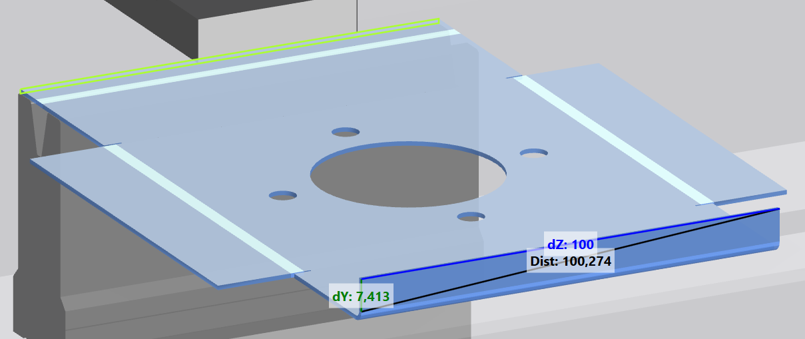

Con la barra di visualizzazione è possibile influenzare la visualizzazione nella finestra 3D. La barra di visualizzazione completa è disponibile nei menu Produrre e Modificare la tecnologia. Nel menu Utensili è disponibile una barra di visualizzazione ridotta. La barra di visualizzazione è suddivisa nei seguenti campi:
 Funzioni di zoom
Funzioni di zoom
In questa vista è possibile modificare le dimensioni della visualizzazione della finestra di visualizzazione.
-
 Ingrandire visualizzazione
Ingrandire visualizzazione -
 Ridurre visualizzazione
Ridurre visualizzazione -
 Centratura del passaggio di piegatura attivo in base alle dimensioni dello schermo
Centratura del passaggio di piegatura attivo in base alle dimensioni dello schermo -
 Centratura del pezzo di piegatura di ogni passaggio di piegatura in base alle dimensioni dello schermo
Centratura del pezzo di piegatura di ogni passaggio di piegatura in base alle dimensioni dello schermo
 Posizione
Posizione
In questo campo viene determinata la posizione della visualizzazione nella finestra di visualizzazione. La vista viene spostata nel senso opposto rispetto all’indicatore di direzione delle frecce.
-
 Spostamento della vista a destra
Spostamento della vista a destra -
 Spostamento della vista a sinistra
Spostamento della vista a sinistra -
 Spostamento della vista in basso
Spostamento della vista in basso - Spostamento della vista in alto
 Allineamento
Allineamento
In questo campo viene determinato l’allineamento della visualizzazione nella finestra di visualizzazione.
-
 Mostra la visualizzazione nella finestra 3D dall’alto.
Mostra la visualizzazione nella finestra 3D dall’alto. - Mostra la visualizzazione nella finestra 3D da sinistra.
-
 Mostra la visualizzazione nella finestra 3D da destra.
Mostra la visualizzazione nella finestra 3D da destra. -
 Mostra la visualizzazione nella finestra 3D in modo isometrico
Mostra la visualizzazione nella finestra 3D in modo isometrico
 Visualizzazione utensili
Visualizzazione utensili
Questo campo controlla la visualizzazione di diversi componenti della macchina.
- Attiva o disattiva la visualizzazione degli utensili inferiori.
-
 Attiva o disattiva la visualizzazione degli utensili superiori.
Attiva o disattiva la visualizzazione degli utensili superiori. - Attiva o disattiva la visualizzazione della macchina.
 Visualizzazione del processo di piegatura
Visualizzazione del processo di piegatura
- Visualizza il processo di piegatura corrente prima dell'esecuzione.
 Modifica
Modifica
Disattiva e riattiva la scala dell'angolo. Se la scala dell'angolo non è visualizzata, non è possibile creare ulteriori piegature selezionando il pezzo.
Tutte le funzioni della barra delle funzioni sono eseguibili e le piegature selezionate possono essere cancellate.
Info: Il pulsante si trova nell'editor di profili.
 Misurare
Misurare
-
 Specifica la lunghezza del lato selezionata nella vista 3D.
Specifica la lunghezza del lato selezionata nella vista 3D.
Fig.: Dato della lunghezza per un lato

Se le linee di piegatura sono ortogonali l'una rispetto all'altra, viene visualizzata la quota delle due lunghezze laterali (A).
Fig.: Lunghezza per più lati
-
 Misura le distanze tra due punti in uno spazio tridimensionale.
Misura le distanze tra due punti in uno spazio tridimensionale. - Se i due punti si trovano su un asse, viene visualizzata solo una distanza.
- Se i due punti si trovano su un livello, vengono visualizzate tre distanze.
- Se i due punti si trovano nello spazio, vengono visualizzate quattro distanze.
Fig.: Dato della lunghezza su un asse

Fig.: Dato della lunghezza su un livello

Fig.: Dato della lunghezza in uno spazio